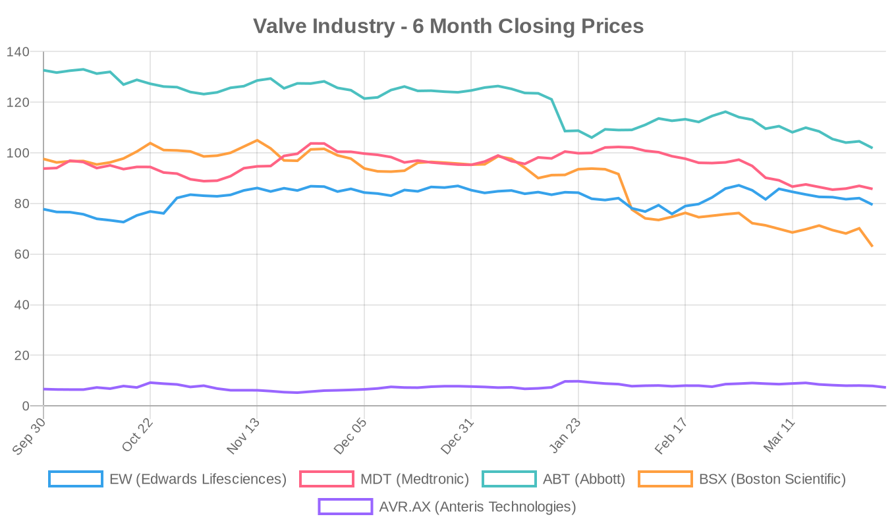
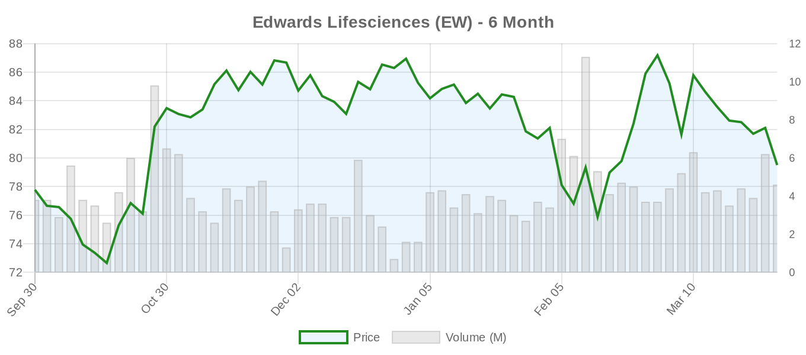
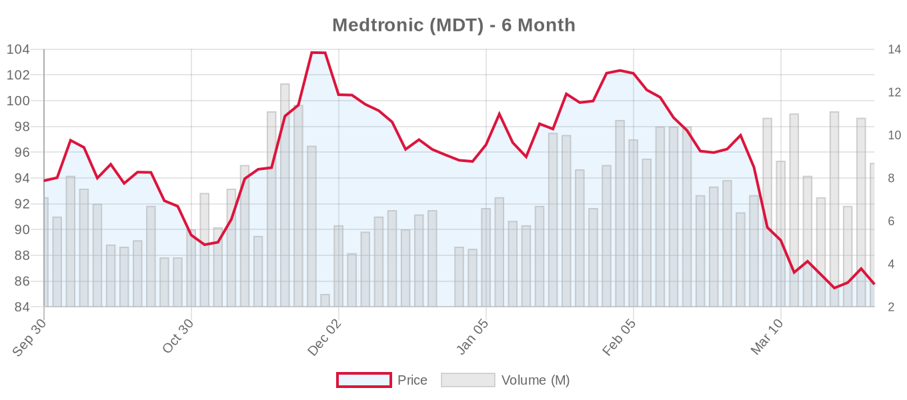
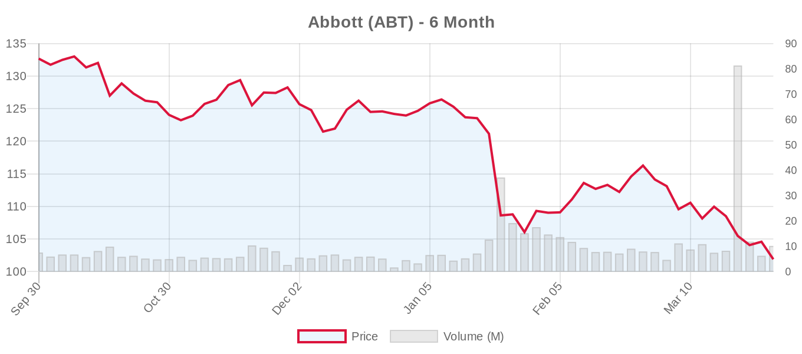
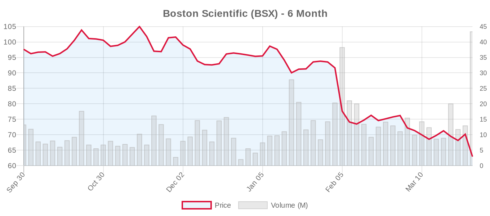
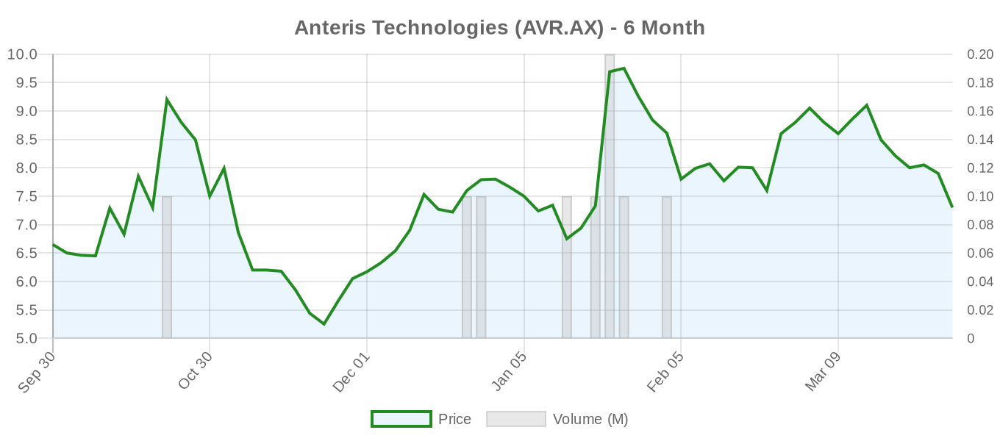

|
||||||||
|
March 31, 2026 By E. Nolan Beckett |
||||||||
|
||||||||
Executive SummaryKey developments emerged from ACC Scientific Sessions, with cerebral protection devices for TAVR showing comparable efficacy in head-to-head comparisons, while Edwards Lifesciences announced promising 2-year EVOQUE tricuspid valve data. The PRO-TAVI study demonstrated that deferring PCI until after TAVR is safe and reduces bleeding complications in patients with concurrent coronary disease. However, structural heart valve stocks showed mixed performance, with Boston Scientific dropping nearly 9% while Edwards held steady. From the ACC.26 Scientific Sessions, several practice-relevant findings emerged that warrant measured interpretation. The cerebral embolic protection landscape gained clarity with comparative data between competing devices, while tricuspid valve replacement continues its gradual evidence accumulation. Notably, studies addressing the sequencing of coronary intervention and TAVR provide practical guidance for operators, though the long-term durability questions that continue to shadow transcatheter therapies remain largely unanswered. Today's Key Findings[NOTABLE] The PRO-TAVI study, presented at ACC Scientific Sessions, demonstrated that deferring PCI until after TAVR is safe and associated with reduced bleeding complications in patients with severe aortic stenosis and concurrent coronary artery disease. This addresses a common clinical dilemma about timing of interventions in this complex patient population. A head-to-head comparison of cerebral protection devices during TAVR showed the investigational system performed comparably to the established Sentinel device, potentially expanding options for stroke prevention during valve procedures. Edwards Lifesciences released 2-year follow-up data from their EVOQUE tricuspid valve replacement system, showing sustained clinical benefits, though the company's stock remained relatively flat amid broader market volatility affecting structural heart device manufacturers. Aortic Valve (TAVR/TAVI)A comprehensive meta-analysis in Cardiology in Review examined TAVR versus SAVR outcomes in patients with prior mediastinal radiation, finding TAVR associated with lower short-term mortality (RR: 0.54) and fewer complications including atrial fibrillation and acute kidney injury. However, 1-year mortality was comparable between approaches, and the authors appropriately cautioned that these observational findings require validation in randomized trials. A Catheterization and Cardiovascular Interventions review highlighted advances in vascular access strategies for TAVR patients with peripheral artery disease. The authors noted that tools like the Hostile Score have improved pre-procedural planning, while technological advances have expanded transfemoral feasibility even in complex anatomy. Alternative access routes remain viable but carry increased risks. Researchers developed a deep learning model to predict left ventricular outflow tract obstruction following TAVR, showing promise in a preprint study. The model achieved an AUROC of 0.78 for predicting post-TAVR LVOTO and retained predictive value even in patients without pre-existing obstruction, suggesting it captures hemodynamic features beyond conventional echocardiography. A case report described the first TAVR procedure in a patient with the rare congenital anomaly of circumflex aortic arch, performed via transaortic approach. Additionally, Taiwan reported its first JenaValve Trilogy system implantation for pure aortic regurgitation. Mitral Valve (MitraClip, PASCAL, TMVR)A case study demonstrated the feasibility of simultaneous transcatheter edge-to-edge repair for both mitral and tricuspid regurgitation in a 77-year-old patient with cardiomyopathy. The dual-valve TEER procedure resulted in significant symptomatic improvement and reduced regurgitation severity, though long-term outcomes of this complex intervention remain undefined. The SESAME (Septal Scoring Along the Midline Endocardium) technique continues to evolve as an approach to prevent LVOT obstruction following transcatheter mitral valve replacement. A detailed echocardiographic guidance protocol was published based on experience from over 200 procedures, emphasizing the complexity of this electrosurgical myotomy approach. Tricuspid Valve (TriClip, TTVR)[NOTABLE] Edwards Lifesciences announced 2-year follow-up data from their EVOQUE transcatheter tricuspid valve replacement system, demonstrating sustained clinical benefits including improved functional capacity and quality of life measures. The data, presented at ACC Scientific Sessions, showed continued durability of the transcatheter valve, though longer-term follow-up remains critical for this emerging therapy. The EVOQUE system's performance data comes as transcatheter tricuspid interventions face scrutiny over appropriate patient selection and durability concerns. While the 2-year results appear encouraging, the tricuspid valve replacement field requires extended follow-up to establish long-term safety and efficacy profiles. Surgical vs. Transcatheter ComparisonsA systematic review in Cureus examined long-term outcomes comparing TAVR versus SAVR in low-risk patients. The analysis found that randomized data showed similar long-term survival and stroke rates, while observational studies suggested worse late outcomes following TAVR. The authors concluded that treatment decisions should be individualized, balancing patient comorbidities with long-term procedural outcomes—a measured conclusion that reflects ongoing uncertainty about durability in younger patients. This finding aligns with the current debate between ACC/AHA and ESC guidelines regarding age thresholds for TAVR versus SAVR, particularly in the 65-70 year age range where guideline recommendations diverge. Preprint HighlightsA medrxiv preprint described development of a deep learning model for predicting post-TAVR LVOT obstruction using single-view echocardiography. The retrospective study of 302 TAVR patients found the DL model independently predicted post-TAVR LVOTO with an AUROC of 0.78, even after adjusting for conventional parameters. Notably, the model retained predictive value in patients without pre-existing LVOTO, suggesting it captures subtle hemodynamic features not apparent on standard echocardiographic assessment. Device & TechnologyA comprehensive review in Cardiovascular Engineering and Technology examined image-based medical navigation systems for cardiac interventions, covering 44 studies from 2019-2023. The analysis highlighted advances in multimodal imaging combining fluoroscopy, ultrasound, and CT for procedures like TAVR, LAAC, and catheter ablation. Despite progress, real-time surgical guidance remains a major challenge requiring continued research. The KONAR-MF™ occluder demonstrated successful transcatheter closure of muscular ventricular septal defects in a multi-center pediatric study, including challenging cases in infants under 7 kg. The flexible medium-profile design achieved high success rates with minimal complications over median 9-month follow-up. Industry & MarketEdwards Lifesciences continues to build evidence for their tricuspid valve replacement platform with the 2-year EVOQUE data release. The sustained clinical benefits support the company's positioning in the emerging tricuspid intervention market, though competitive pressures from Abbott's TriClip repair system and other transcatheter replacement technologies remain significant. The cerebral protection device landscape may become more competitive if the novel system showing comparable performance to Sentinel gains regulatory approval, potentially challenging Boston Scientific and Abbott's current market positions in embolic protection during TAVR. Valve Industry Stocks Edwards Lifesciences (EW) Current Price: $79.50 (+0.16, +0.20% daily) | 6-Month Performance: +2.22%
Edwards showed resilience with modest gains despite the positive EVOQUE tricuspid data release. The stock's relative stability reflects investor confidence in the company's transcatheter valve portfolio, though the premium valuation suggests high expectations for continued growth in structural heart markets. Medtronic (MDT) Current Price: $85.74 (-1.40, -1.61% daily) | 6-Month Performance: -8.57%
Medtronic faced headwinds with the daily decline, contributing to its underperformance over six months. The company's Evolut TAVR platform continues competing in an increasingly crowded market, while investors await updates on pipeline structural heart technologies. Abbott (ABT) Current Price: $101.88 (-2.11, -2.03% daily) | 6-Month Performance: -23.21%
Abbott experienced significant pressure, down over 23% in six months despite strong analyst support. The decline may reflect broader healthcare sector concerns or specific challenges in key product lines including structural heart devices like MitraClip. Boston Scientific (BSX) Current Price: $62.93 (-6.24, -9.02% daily) | 6-Month Performance: -35.54%
Boston Scientific suffered the most significant decline, dropping over 9% daily and 35% over six months despite maintaining strong buy ratings. The sharp drop may reflect concerns about competitive pressures in structural heart markets or broader execution challenges. Anteris Technologies (AVR.AX) Current Price: A$7.30 (-0.40, -5.19% daily) | 6-Month Performance: +9.77%
The Australian structural heart company showed positive six-month performance despite daily weakness. Anteris continues developing its DurAVR transcatheter aortic valve technology with ongoing clinical trials. The structural heart device sector faces headwinds with major players experiencing significant declines despite generally positive analyst sentiment. Boston Scientific's sharp drop highlights the volatility in this competitive market, while Edwards' resilience may reflect stronger positioning in emerging markets like tricuspid intervention. The sector continues balancing innovation investments against increasing competitive pressures and regulatory scrutiny of long-term durability data. Clinical Trial UpdatesAortic Valve Trials
Mitral Repair
Mitral Replacement
Tricuspid Repair
Tricuspid Replacement
Several major landmark trials continue enrollment, with particular attention to the REPAIR-MR and PRIMATY studies that will define the role of transcatheter mitral repair versus surgical and medical alternatives. The ongoing TRISCEND II study supports Edwards' EVOQUE system development, aligning with today's positive 2-year data announcement. The ACC Scientific Sessions continue to generate clinically relevant findings, though the persistent questions around long-term durability and appropriate patient selection for transcatheter therapies remain central to the field's evolution. Tomorrow's coverage will focus on additional late-breaking presentations from the meeting. |
||||||||
|
|
||||||||
|
||||||||
|